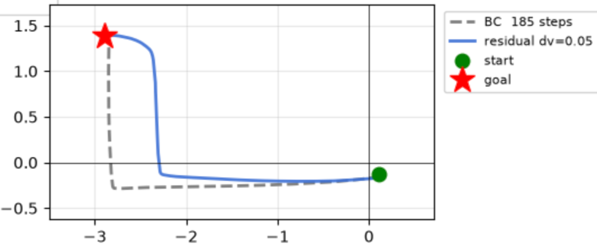

Learning Robot Learning
Summary
A step-by-step sandbox for learning the core methods of robot learning on one small task. A simulated unicycle car with noisy sensors has to turn around and drive to a random goal about 3 m away. It builds up from a neural network written by hand in NumPy, through behavior cloning and DAgger, to PPO. The final stage is residual RL, where PPO may only nudge a frozen behavior-cloned policy within a hard-bounded window.
What I did
- Wrote an MLP from scratch in NumPy (forward pass, backprop, SGD) and used it to clone a demonstrator, then fixed compounding error with DAgger.
- Built the unicycle environment and a Gymnasium wrapper, plus three demonstrators: a smooth P-controller, a 'turn then drive' policy, and an 'x then y' policy that mimics human driving styles.
- Trained a Stable-Baselines3 PPO baseline from scratch with no demonstrations.
- Trained a PyTorch behavior cloning policy on 50 human-style demos, using a trajectory-level train/val split and a network that rewrites observations into the car's body frame.
- Implemented residual PPO, a = μ_BC(obs) + [dv, dω] ⊙ a_PPO, with the bound enforced as a hard clip instead of a reward penalty, and swept the speed bound dv to measure how far the policy drifts from the demonstrator as the constraint loosens.
Skills
Python
NumPy
PyTorch
Behavior Cloning / DAgger
PPO (Stable-Baselines3)
Residual RL
Gymnasium